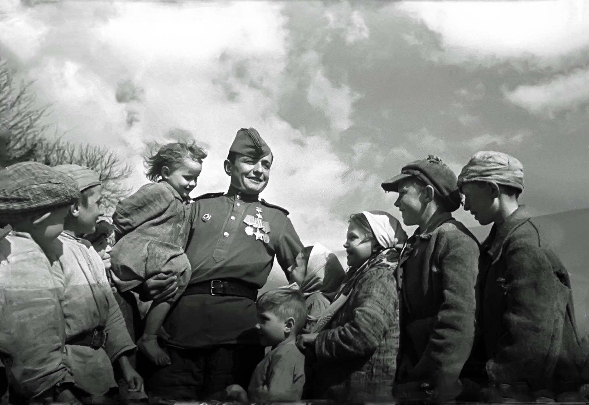

На начало июня 1941 г. в Вооруженных Силах СССР находилось свыше 5,3 млн человек. Из них белорусы составляли около 200 тыс. С началом Великой Отечественной войны в действующую армию было мобилизовано 500 тыс. наших соотечественников. С июля месяца 1941 г. Светлогорский (бывший Паричский) район начали занимать немецко-фашистские захватчики. К концу месяца район был полностью занят ими. Здесь была ликвидирована советская власть и установлен «новый немецкий порядок». Из числа местных жителей были сформированы полицейские отряды, которые во всём прислуживали захватчикам. Оставшиеся здесь женщины, старики и дети рассматривались немецкой администрацией как бесплатная рабочая сила и прислуга.
Шатилки (сейчас г. Светлогорск) ж/д мост через р.Березину взорванный в июне 1941г
Значительным был вклад белорусского народа в победу в Великой Отечественной войне. На территории БССР действовали 213 партизанских бригад. Более миллиона жителей БССР воевали в рядах действующей армии, сотни тысяч работали в советском тылу. Выдающимися военачальниками проявили себя 217 генералов и адмиралов - уроженцев Беларуси, За героизм и мужество более 300 тыс. уроженцев Беларуси были награждены орденами и медалями Самой болезненной и тяжелой потерей для Беларуси было уничтожение свыше 2,2 млн. человек. Опустели сотни сёл и деревень, уменьшилось количество городского населения. Оккуланты сожгли и разрушили 209 из 270 городов и районных центров, 9 200 сёл и деревень. Было разрушено 100 465 предприятий, более, чем 6 тыс, км железной дороги, разграблено 10 тысяч колхозов, 92 совхоза, уничтожены почти все электростанции. Беларусь потеряла около половины своего народного богатства.
Белорусская наступательная операция «Багратион» - стратегическая наступательная операция Великой Отечественной войны, проводившаяся 23 июня - 29 августа 1944 года. Названа в честь полководца Отечественной войны 1812 года - П. И. Багратиона.
Освобождение Шатилок 25 ноября 1943 г. в полдень советские солдаты БОБРУ вышли на южную окраину Шатилок Утром 26 ноября противник выбил наш полк, ЕТОНАНИ ПАРИЧИ оборонявший северо-западную окраину Шатилок. Бои за Шатилки длился более четырех часов. Нередко дело доходило до рукопашной схватки. Наши подразделения отошли на южную окраину Шатилок, Утром 27 ноября гвардейцы атаковали противника и ворвались в поселок. Первым завязал бой на улицах 3-й батальон 110-го полка капитана И.М.Шурова. Упорные бои шли за каждую улицу, за каждый дом. ОПЕРАЦИЯ 3 результате решительных и смелых действий подразделений 110-го полка и 1-го батальона 113-го полка к 16 часам 30 минутам 27 ноября БАГРАТИОН» противник был окончательно выбит из Шатилок.
Красная Армия очистила от фашистов OH первый областной центр республики - Гомель. Освобожден в ходе Гомельско- там Речицкой наступательной операции. Население Гомеля на момент освобождения (27.11.1943 г.) составляло менее 15 тыс. 1943 жителей. (Для сравнения: до начала Великой Отечественной войны в Гомеле проживало более 140 тыс. человек).
В годы Великой Отечественной войны оккупанты развязали настоящий геноцид против белорусского народа, а также еврейского и цыганского. Самым страшным его проявлением стало уничтожение деревень, вместе с населением. Белорусские деревни были разграблены, разрушены и сожжены. Более 60 населенных пунктов нынешнего Светлогорского района тоже не минула эта страшная участь. Но самая страшная трагедия в Светлогорском районе произошла в д. Ола. Утром 14 января 1944 года её со всех сторон окружил немецкий карательный отряд. В течении дня там было убито, сожжено и замучено 1758 ни в чем не повинных людских жизней, среди которых 950 детей ..
Более подробно можно ознокомиться с информацией о геноциде белорусского народа на сайте Генеральной прокуротуры Республики Беларусь: Перейти на сайт